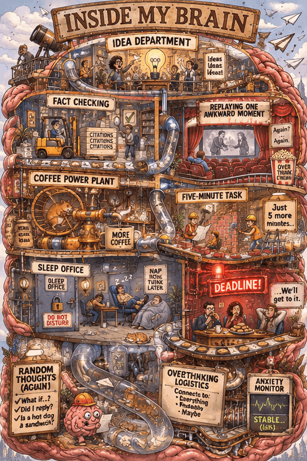

The coffee plant is running. The sleep office is closed. Pick a department and see what everyone is working on.
Paper planes leave the building faster than anyone can file them. Some eventually return as five-minute tasks.
